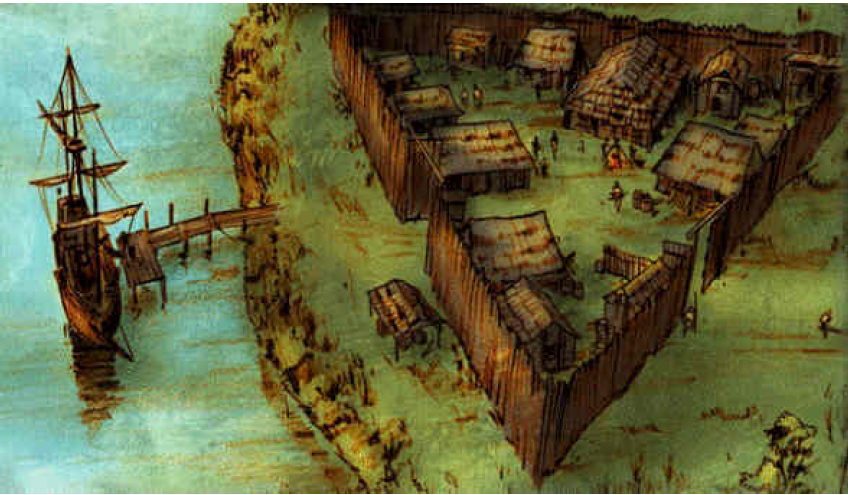
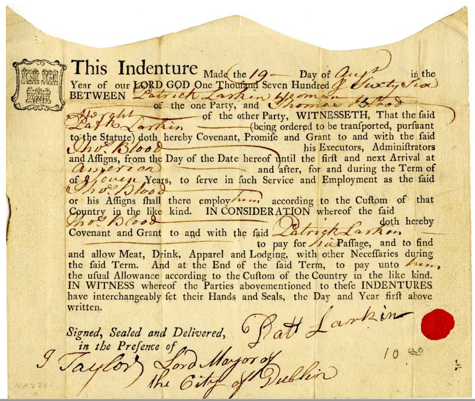

Free settlers outnumbered slaves for the first time at end of 18th century. To a large extent, these were economic immigrants as the ones today. One important difference is that European migration to the Americas was unregulated, everyone who managed to arrive could stay.
Most of pioneer settlers come with their families and are from Northwest of Europe, ranging from farmers, craftsmen and artisans. Some came to U.S. to flee from war and persecution temporarily, but most intended to acquire land in the US and settle permanently. Many would move to the New World frontier (in the US, to the Midwest first and then the West).
 